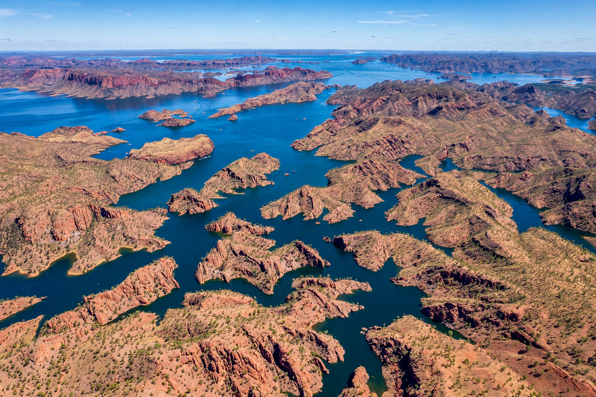

Lake Argyle is Western Australia's largest and Australia's second largest freshwater man-made reservoir by volume. It is part of the Ord River Irrigation Scheme in the Kimberley region, near the town of Kununurra.

| Location | Kimberley, Western Australia |
|---|---|
| Coordinates | 16°07′S 128°44′E |
| Type | Reservoir |
| Surface area | 703–980 km² |
| Volume | 10.7 km³ (normal) |
The Ord River Dam was completed in 1971 by the American Dravo Corporation, impounding the Ord River. The lake was named after Argyle Downs, the pastoral property of the Durack family submerged by its waters; the Durack homestead was dismantled and rebuilt as a museum on higher ground.
The lake and its wetlands are a Ramsar-listed site of international importance, supporting freshwater crocodiles, fish such as barramundi, and large populations of waterbirds. Water irrigates sugarcane, mangoes, bananas and other crops around Kununurra, while a hydroelectric station supplies the town and the Argyle diamond mine. Tourism includes cruises, fishing and swimming.